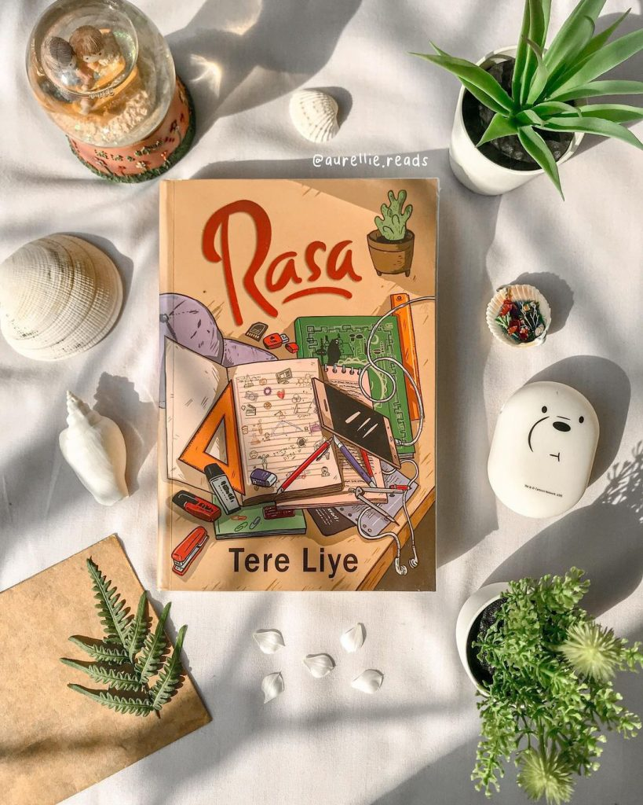
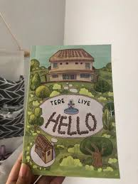
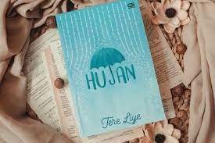
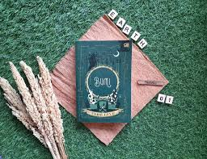
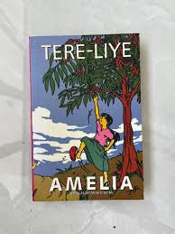
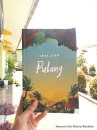

Hi Book Lover
"Books are the plane, and the train, and the road. They are the destination, and the journey. They are home." Anne Quinlen

Tentang Tere Liye
Beberapa tahun terakhir ini, Tere Liye menjadi salah satu sosok penulis yang tengah menjadi sorotan. Hal ini tentu saja bukan karena kontroversinya, melainkan karena produvitasnya dalam menciptakan karya sastra yang luar biasa, baik itu novel maupun dalam bentuk serius atau cerita bersambung.
Sebagai seorang penulis yang terkenal sangat produktif, total sudah ada lebih dari 30 buku yang ditulis dari tahun 2005. Para penggemar novel karangan Tere Liye pada dasarnya berasal dari berbagai latar belakang, mulai dari remaja yang masih sekolah hingga orang dewasa yang sudah menikah. Namun, apa kamu tahu tentang siapa sebenarnya sosok Tere Liye itu sendiri?
Bagi para penggemar, Tere Liye bisa dikatakan sebagai sosok yang cukup misterius. Pasalnya, dengan reputasinya sebagai penulis best seller hingga bahkan ada kisahnya yang sudah pernah diangkat ke layar bioskop. Tere Liye tetap tidak suka membagikan kehidupan pribadinya kepada publik. Tak jarang ada beberapa orang yang menganggap bahwa Tere Liye sebenarnya merupakan seorang novelis perempuan.
Padahal, nama asli dari Tere Liye adalah Darwis, seorang laki-laki asal Sumatera Selatan.
Kehidupan Masa Kecil dan Pendidikan Darwis "Tere Liye"
Darwis atau yang lebih kita kenal sebagai "Tere Liye" dilahirkan di sebuah kota kecil di Provinsi Sumatera Selatan, tepatnya yaitu Kota Lahat pada tanggal 21 Mei 1979. Darwis bukanlah seorang anak yang lahir dari sebuah keluarga kaya raya. Orang tuanya sehari-hari memiliki mata pencaharian sebagai petani dengan dikaruniai banyak anak. Dia diketahui merupakan anak keenam dari tujuh bersaudara.
Meskipun begitu, orang tua Tere Liye mendidik dan membesarkan anaknya sehingga tumbuh sebagai pribadi yang pintar dan cerdas.
Tere Liye banyak menghabiskan masa kecilnya di kampung halamannya. Semasa menginjak usia masuk sekolah, Tere Liye mengenyam pendidikan dasar di Sekolah Dasar Negeri 2 Kikim Timur, Kecamatan Kikim Timur. Kemudian, Tere Liye melanjutkan ke jenjang pendidikan tingkat menengah di
SMP Negeri 2 Kikim yang juga terletak di wilayah Kabupaten Lahat. Setelah mulai menginjak usia Sekolah Menengah Atas, Tere Liye mulai keluar dari kampung halamannya untuk meneruskan pendidikannya di SMA Negeri 9 Bandar Lampung, Provinsi Lampung.
Kehidupannya di Bandar Lampung telah membuat sosok Tere Liye menjadi seorang yang haus akan ilmu. Selanjutnya, Tere Liye memutuskan untuk melanjutkan pendidikan ke jenjang lebih tinggi lagi. Dia ingin mengenyam pendidikan tinggi terbaik yang di Indonesia. Maksud dari keinginannya tersebut adalah kuliah di Universitas Indonesia atau disingkat UI.
Pada akhirnya, Tere Liye berhasil mewujudkan mimpinya tersebut. Tere Liye secara resmi diterima sebagai mahasiswa baru di Universitas Indonesia (UI). Sebagai seorang penulis novel yang erat kaitannya dengan program studi sastra, ternyata banyak orang yang tidak mengetahui bahwa Tere Liye merupakan mahasiswa dari Jurusan Akuntansi di Fakultas Ekonomi UI.
Setelah menyelesaikan kuliahnya, Tere Liye ternyata tidak bekerja di sebuah perusahaan yang memiliki keterkaitan dengan dunia sastra atau kepenulisan. Tere Liye awalnya bekerja sebagai seorang akuntan di sebuah perusahaan. Hal ini pun sesuai dengan latar belakang pendidikannya yaitu akuntansi.
Kehidupan Pribadi Tere Liye yang Misterius
Sebagian besar orang yang sudah membaca novel karangan Tere Liye bisa jadi belum tentu tahu sosok Tere Liye, terlebih lagi kehidupan pribadinya. Tere Liye memiliki kebiasaan yang sangat menarik, sehingga sangat berbeda dengan penulis lainnya. Pada suatu kesempatan, Tere Liye pernah memberikan keterangan kepada Syahrudin dari Republika Penerbit terkait keengganan menjadi sosok terkenal.
Menurut informasi lebih lanjut, Syahrudin dari Republika Penerbit mengungkapkan bahwa Tere Liye lebih ingin dikenal melalui karya-karyanya. Tere Liye tidak ingin banyak orang tahu siapa sosok aslinya. Pernyataan tersebut pada akhirnya terbukti dan sesuai dengan sikap yang ditampilkan Tere Liye selama ini. Dia merupakan seseorang yang tidak pernah mengumbar kehidupan pribadinya di media sosial.
Tidak hanya itu, Tere Liye diketahui dalam beberapa acara menyukai penampilan yang sederhana, seperti kehidupan saat ia masa kecilnya. Maka dari itu, Tere Liye sering kali terlihat mengenakan pakaian santai hingga non formal pada saat mendatangi berbagai acaranya. Ditambah lagi, Tere Liye juga hampir selalu menolak pada saat diajak berfoto selfie.
Terkait kehidupan pribadi seorang Tere Liye, publik hanya bisa mengetahui informasi secara terbatas. Tere Liye diketahui menikahi seorang perempuan cantik yang bernama Riski Amelia. Dari pernikahan tersebut, Darwis telah dikaruniai dua orang anak yang masing-masing diberi nama Abdullah Pasai dan Faizah Azkia.
Tere Liye Sosok Novelis yang Serba Bisa
Seorang penulis biasanya memiliki keahlian khusus dalam menghasilkan suatu karya sastra, termasuk penulis prosa seperti novel. Misalnya saja, seperti J. K. Rowling yang dikenal dengan ciri khas dalam menulis novel fiksi dengan imajinasi luar biasanya. Tidak hanya itu, masih ada pula nama novelis Agatha Christie yang tidak bisa dilepaskan dari karakter Hercule Poirot atau seorang tokoh detektif yang hadir dalam 33 novel serta 50 cerita pendek yang ditulisnya.
Hanya saja, keahlian khusus tersebut tidak berlaku bagi Tere Liye. Tere Leye bisa dikatakan hampir bisa menulis berbagai jenis genre karya sastra prosa. Misalnya saja, kemampuannya dalam menciptakan novel telah terbukti pada karyanya yang berjudul Hafalan Shalat Delisa. Dalam karya yang menjadi salah satu buku best seller tersebut, Tere Liye mampu menciptakan cerita yang dapat dipastikan membuat para pembacanya menangis dan terharu.
Selain best seller, novel Hafalan Shalat Delisa juga berhasil tayang ke layar lebar bahkan menjadi salah satu film yang paling diburu penonton.setelah rilis. Film Hafalan Shalat Delisa memiliki cerita yang hampir sama dengan novelnya yakni cerita tentang bencana tsunami Aceh tahun 2004. Film yang pertama kali tayang pada 22 Desember 2011 ini berhasil menggaet lebih dari 668 ribu penonton.
Kemudian, Tere Liye juga menunjukkan kemampuan menulis serba bisanya pada seri novel yang berjudul Negeri Para Bedebah dan Negeri di Ujung Tanduk. Kedua novel tersebut diketahui memiliki genre sebagai novel action. Novel action sendiri dapat dipahami sebagai cerita yang menggambarkan pertarungan seru antara tokoh utama dengan berbagai lawannya.
Koleksi
Novel Tanpa Seri
Novel Rasa

Novel Rasa mengisahkan tentang Linda, seorang siswi SMA yang periang, semangat, menyukai proses belajar, dan pekerja keras. Sepulang sekolah, Lin bekerja di studio foto milik pamannya. Demi membantu Bunda yang ditinggal Ayah pergi.
Kepergian Ayah meninggalkan Bunda menjadi faktor terbesar mengapa ia tidak tertarik dengan lawan jenis. Lin hanya tahu bahwa Ayah pergi bersama wanita lain. Hingga kemudian sebuah rasa menyapanya. Mengubah banyak hal, Lin yang banyak bicara sempat menjadi pendiam.
Lin yang hobi makan hingga mendapat julukan perut karung, sempat kehilangan selera makan.
Penampilannya yang tomboy mulai berubah menjadi feminim. Rambutnya yang biasa ditutup topi butut kini digerai. Dan yang menjelma konflik besar, cinta meretakkan persahabatannya dengan Jo karena bersaing memperebutkan cowok yang sama.
Keduanya terlibat perang dingin dan saling intrik demi mendapatkan Nando. Di sisi lain, Topan kakak Jo jatuh cinta pada Lin. Namun akhirnya patah hati saat ia mau 'menembak' Lin di kantin. Saat itu juga hati Topan hancur, wajahnya pucat, dan hari-hari selanjutnya ia tidak bersemangat untuk mengantar Jo dan Lin. Rasa yang sama juga menyapa Adit, kakak Lin.
Ia jatuh cinta kepada Shopi, anak Pak Haji, tetangga sendiri.Berbeda dengan Topan, rasa di hati Adit juga dirasakan oleh Shopi.
Rasa lain yang kontras adalah benci dan kecewa. Umumnya, manusia menilai dari persepsinya. Demikian pula Lin yang sangat benci dengan ayah dan "wanita lain" yang ia anggap merampas ayah sejak Lin kelas 5 SD. Jangankan bertemu,
mendengar namanya saja Lin sudah sakit hati. Demikian pula Bunda. Hingga ketika ia mendapatkan kisah utuh bahwa yang terjadi tidaklah sesederhana "ayah pergi bersama wanita lain" persepsi Lin mulai berubah.
Apakah Lin bisa memaafkan Ayah dan "wanita lain" itu? Bagaimana pula dengan Bunda, bisakah memaafkan keduanya?
Lalu seperti apa ujung kisah persahabatan Lin dan Jo, bisakah mereka kembali kompak "di mana ada Lin di situ ada Jo" atau sebuah rasa menghancurkan segalanya? Secara apik Tere Liye membawa pembaca mendaki klimaks dari cerita ini dan menuruni antiklimaksnya.
Novel Hello

Hello merupakan novel terbaru yang diterbitkan oleh Tere Liye. Mengangkat tema yang cukup unik, tentang cinta antara dua anak manusia yang telah bersama sejak masih bayi. Hesty dan Tigor. Keduanya lahir ke dunia di detik yang hampir bersamaan. Tinggal dalam satu lingkungan yang sama, tetapi dengan 'kasta' dan tingkat sosial yang sama sekali berbeda.
Orang tua Tigor adalah pembantu dan sopir untuk keluarga Hesty. Hidup keduanya bagaikan langit dan bumi. Hesty mendapatkan segalanya yang terbaik, mulai dari pendidikan sampai makanan, sedangkan Tigor hidup sederhana di bangunan tambahan di belakang rumah mewah Hesty yang khusus diperuntukkan untuk tempat tinggal pembantu.
Cerita ini disampaikan dengan gaya penulisan yang cukup unik. Jika biasanya tokoh utama mengambil peran sentral dan bercerita langsung atau diceritakan sendiri oleh penulis, di cerita ini pembaca justru diajak untuk mengikuti kisah Hesty dan Tigor dari tokoh lain yaitu Ana. Ana adalah seorang arsitek hebat yang keahliannya sudah diakui banyak orang.
Ia diminta untuk merenovasi sebuah rumah tua. Dari sana lah ia mengetahui sebuah rahasia besar yang ternyata juga melibatkan masa lalu Paman Nomor Satunya. Ada banyak sekali lika-liku yang dialami oleh para tokoh. Pembaca seperti diajak ikut menapaktilasi kehidupan Hesty dan Tigor di rumah dua lantai itu. Tentang persahabatan mereka, perasaan yang mulai muncul,
hingga penolakan dari ayah Hesty yang tidak merestui hubungan anaknya dengan Tigor karena perbedaan status sosial. Pesan moral yang bisa diambil adalah cinta akan menemukan rumahnya sendiri, meski perlu waktu yang tidak singkat dan pengorbanan perasaan yang rumit.Kesalahpahaman memegang peran yang sangat sentral di cerita ini.
Andai saja Hesty dan Tigor sama-sama mengkonfirmasi apa yang mereka lihat, mungkin mereka tidak perlu menunggu waktu lama untuk bisa bersama. Tapi, waktu memang memegang rahasia sendiri yang tidak bisa diinterupsi oleh siapapun.
Sebuah cerita yang cocok dibaca untuk kamu yang sedang mencari bacaan ringan namun penuh makna.
Novel Hujan

Novel ini mengisahkan tentang percintaan dan perjuangan hidup seorang perempuan bernama Lail. Ketika Lail baru berusia 13 tahun, dirinya harus menjadi seorang anak yatim piatu karena ibu dan ayahnya meninggal dalam bencana letusan gunung api dan gempa bumi yang menghancurkan kota tempat tinggal mereka. Letusan Gunung Api Purba ini bahkan melebihi letusan Gunung Krakatau dan Gunung Tambora.
Untungnya, Lail berhasil diselamatkan oleh seorang anak laki-laki berusia 15 tahun bernama Esok. Meskipun ibu Esok selamat, namun kedua kakinya harus diamputasi. Selama setahun lebih setelah bencana tersebut, Lail dan Esok tinggal bersama di tempat pengungsian dan mereka tak terpisahkan seperti kakak-adik. Semua orang di pengungsian mengetahui tentang hubungan mereka. Mereka sering membantu petugas pengungsian.
Namun, kehidupan mereka berdua berubah ketika pemerintah mengumumkan penutupan tempat pengungsian. Lail akan tinggal di panti asuhan, sementara Esok diangkat menjadi anak oleh salah satu keluarga. Di panti asuhan, Lail bertemu dengan Maryam, teman sekamarnya yang ceria, lucu, dan penuh semangat. Maryam memiliki rambut kribo yang halus.
Di panti asuhan, ada aturan yang harus diikuti oleh Lail dan Maryam. Lail sering merindukan Esok, sehingga mereka memiliki jadwal pertemuan rutin. Meskipun hanya sekali dalam sebulan, pertemuan itu sangat ditunggu-tunggu dan berarti bagi Lail.
Pertemuan mereka hanya untuk berbagi cerita tentang aktivitas sehari-hari. Namun, jadwal rutin tersebut berubah ketika Esok harus melanjutkan pendidikannya di ibu kota. Lail dan Esok hanya bisa bertemu saat liburan semester.
Novel Berseri
Novel Bumi

Ali dan Seli berbagai dunia lain yang kemudian disebut dengan dunia paralel. Alur cerita pada novel pertama serial Bumi ini adalah maju. Seperti kalimat yang di jelaskan di awal buku ini adalah pembuka perjalanan Raib, Ali dan Seli berbagai dunia lain yang kemudian disebut dengan dunia paralel.
Petualangan di novel Bumi bermula ketika Raib tidak sengaja menemukan kemampuan yang terpendam di dalam dirinya yaitu bisa menghilang dan juga menghilangkan benda dilanjutkan dengan pertemuannya dengan sosok tinggi kurus yang muncul dari cerminnya.
Pada suatu hari Raib lupa membawa buku PR Matematikanya yang kemudian menyebabkan ia dihukum diluar kelas. Karena bosan ia kemudian mencoba menutup matanya dengan kedua telapak tangannya kemudian secara tiba-tiba Ali yang tidak pernah mengerjakan tuga muncul di hadapannya dan bertanya “apakah kamu bisa menghilang Ra?”
Kejadian berikutnya adalah ketika Seli dan Raib pergi kekantin pada suatu siang, dimana di tempat tersebut sedang ada perbaikan gardu listrik yang hampir mencelakai mereka berdua. Namun, dengan kekuatan dan reflek yang dimiliki Raib berhasil menghilangkan tiang listrik tersebut.
Kemudian, muncul sebuah gelembung dan keadaan sekita menjadi gelap. Itulah Tamus sosok tinggi kurus yang pernah muncul dari cermin Raib. Ia dan pasukannya memaksa untuk membawa Raib karena diyakini sebagai Putri Bulan dan telah diincar sejak lama.
Perasaan ingin saling melindungi yang kuat membuat Ali dan Seli turut bertarung bersama Raib. Mereka sangat kesulitan untuk menghadapi pasukan tersebut dengan kemampuan yang terbatas. Beruntung selanjutnya munculah Miss Selena yang mereka kenal guru matematika di sekolah mereka. Miss Selana ternyata adalah juga seorang petarung dari klan Bulan. Miss Selena bertarung mati-matian melawan Tamus dan pasukanya.
Petualangan dunia parallel pada novel Bumi ini bernar-benar dimulai ketika dalam keaadan kewalahan mengahdapi pasukan Tamus, Miss Selena mengarahkan Raib, Ali dan Seli untuk melarikan diri melalui celah kecil yang dibuat oleh Miss Selana. Setelah melalui celah tersebut secara ajaib mereka tiba di tempat yang sangat aneh.
Novel Amelia

Selamat datang di dunia Anak-anak Mamak. Dunia yang tidak pernah kalian bayangkan sebelumnya. Di mana rasa ingin tahu dan proses belajar menyatu dengan kepolosan, kenakalan, hingga isengnya dunia anak-anak.
Setiap buku selalu sukses membuat saya menangis, tertawa, terharu akan sikap anak-anak dengan pemikiran yang luar biasa layaknya orang dewasa. Misalnya Amelia, si anak bungsu yang pada akhirnya mengetahui rahasia kecil yang dilakukan Mamaknya, bahkan ia pernah melihat langsung ternyata Mamaknya yang terbiasa bangun jam 2 malam untuk melaksanakan solat tahajud, pernah menangis di depan Bapak, betapa ia sangat khawatir dan mencemaskan keberadaan Kak Eli di sulung yang melanjutkan sekolah SMP di Kota Kabupaten. Rahasia kecil yang tidak diketahui oleh ketiga kakaknya. Cerita yang mengharukan lainnya ketika Kak Eli menggendong Amel, saat Amel kakinya sakit (mereka mengambil kayu disuruh Mamak)
Cerita keseruan Amel dan gengnya bernama “Geng Anak Bungsu,” terdiri dari Maya, Chuck Norris dan Tumbusai juga sangat menyentuh, mereka anak-anak yang luar biasa solid dalam persahabatannya
Karakter Pak Bin, Wak Yati, Nek Kiba, Mang Unus serta Kang Bujang, juga memperkaya cerita Novel Amelia. Dengan ending yang Indah menutup rangkaian cerita anak-anak Mamak. Baca, nikmati dan resapi setiap bab yang tersaji, maka saya bersyukur pernah membaca ke empat novel ini. Dari ke empat novel serial anak Mamak, di buku Amelia paling sering nangis bacanya Mau banyak belajar dari karakter Mamak, Bapa, ke empat anak special ini, pak Bin guru sekolah yang tulus mengabdi telah menjadi pelita yang menerangi masa depan anak didiknya, Nek Kiba seorang guru mengaji yang sangat disegani dan dihormati warganya, serta setiap karakter yang melengkapi cerita kehidupan anak-anak Mamak.
Serunya di buku Amelia juga diceritakan tentang Burlian dan Pukat sunat, tentu bagian sunat tidak ditulis kan di bukunya Burlian dan Pukat, yang ternyata kedua sigung ini berulah disaat hari sunat, mereka berdua sempat kabur karena takut di sunat
Amelia mendapatkan geral doktoral dan menyusul kakaknya, Pukat, Kuliah di Amsterdam. Namun, ia mengabdikan ilmunya di kampung halamannya, beautiful ending *proud of you, Amelia*
Novel Pulang

Cerita bermula dari karakter utama bernama Bujang (15) yang digambarkan sangat piawai dalam berburu babi hutan. Kepandaiannya ini membuat Teuke Muda terkesan sehingga ia memutuskan untuk membawa Bujang ke kota dan mengasuhnya layaknya anak angkat.
Bujang adalah bocah yang pendiam dan tidak pernah mengenyam bangku sekolah. Namun, sejak diasuh dan diberikan pendidikan yang layak oleh Teuke Muda, Ia tumbuh menjadi Bujang dewasa yang telah memiliki pekerjaan profesional.
Tidak hanya itu, Ia juga diberikan seorang guru terbaik untuk membantunya mengasah kemampuan bela dirinya. Pada akhirnya, ia pun dijadikan bodyguard oleh Teuku Muda.
Kecerdasan, kekuatan, dan kemampuan bela diri yang dimiliki Bujang membuatnya terlibat dalam misi pemberantasan judi dan mencuri sandi penting yang dimiliki oleh keluarga Mater Dragon. Keberhasilannya dalam menyelesaikan mis membuat Bujang harus pindah ke Ibu kota untuk menyelesaikan misi-misi lain dari Teuke Muda.
Seiring berjalannya waktu, kesehatan Teuke Muda semakin menurun. Sadar akan kondisi kesehatannya, Ia pun sempat menawarkan kepada Bujang untuk menjadi kepala keluarga dan memimpin orang-orang yang selama ini bekerja kepada dirinya.
Alasannya memilih Bujang karena Teuke Muda sudah merasakan keanehan kepada orang-orang yang bekerja padanya. Selain itu, ia merasa hanya Bujang lah satu-satunya orang bisa dijadikan kepercayaan oleh Teuke Muda untuk menggantikan posisi dirinya.
Merasa bahwa Teuke Muda telah banyak berjasa dalam hidupnya, Bujang pun memutuskan untuk terus setia berada di sisi Teuke Muda. Hal ini dibuktikannya dengan membantu menangkap para pengkhianat dalam keluarga besar Teuku Muda yang rupanya memiliki dendam masa lalu.
Suatu hari, Bujang mendapat kabar bahwa ibunya pergi dan tak seorang pun tahu kemana ia pergi. Mengetahui hal ini, Bujang sangat ingin segera pulang ke kampung halamanya dan ingin memastikan kebenaran kabar itu.
Kontak Pembelian Buku
Untuk Membeli buku, berikut kontak kemitraan yang bekerja sama dalam penjualan buku:
Gramedia
Plaza Bintaro Jaya Lt. 2. Jalan Bintaro Utama Sektor 3A, Pd. Karya, Kec. Pd. Aren, Kota Tangerang Selatan, Banten 15225
Website
Instagram
Facebook